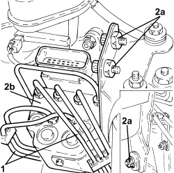

3340A12 ABS HYDRAULIC AND ELECTRONIC CONTROL UNIT - R.R.
- Path
- Procedures > 33 BRAKES > 3340 ANTI-LOCK BRAKING SYSTEM (ABS) > 3340A ABS CHECK/ADJUSTMENT DEVICES > 3340A12 ABS HYDRAULIC AND ELECTRONIC CONTROL UNIT - R.R.
- Kind
- repair procedure (removal / refitting; the operation number is the code)
- Applies to
- all engines; all production periods
- Interactive page
- https://sloeber94.github.io/elrnDB-aBrrSpdr/en/#/946002140
Applies to: all engines; all production periods
 Removing
Removing
 Refitting
RefittingOp. 5530B52 BATTERY SUPPORT/DRIP TRAY - R.R
- Drain the brake fluid into a suitable container.
- Mark the pipes on the A.B.S. control unit
- Disconnect the electrical connection for the A.B.S. control unit.
1. Disconnect the rigid pipes from the A.B.S. hydraulic control unit
2. Undo the nuts (2a) and remove the bracket complete with A.B.S. control unit (2b).

Applies to: all engines; all production periods
Refitting
Removing- Position the bracket complete with A.B.S. control unit and secure it using the nuts.
- Connect the pipes to the A.B.S. control unit and tighten the connectors to the recommended torque.
Component | Fastening | dia | Value (daNm) | Validity |
|---|---|---|---|---|
Brake pipe connectors | Connector | M10/M12 | 1.4 ÷ 1.8 |
- Connect the electrical connection to the A.B.S. control unit.
Op. 5530B52 BATTERY SUPPORT/DRIP TRAY - R.R
Op. 0010T64 BRAKE AND/OR CLUTCH FLUID CHECK LEVEL AND TOP UP AS NECESSARY
Topics linked from this page (4)
- 0010T64 BRAKE AND/OR CLUTCH FLUID CHECK LEVEL AND TOP UP AS NECESSARY
- 0010T65 HYDRAULIC BRAKE SYSTEM - BLEED AIR
- 5530B10 BATTERY - R+R
- 5530B52 BATTERY SUPPORT/DRIP TRAY - R.R
Topics that link to this page (9)
- F001 POOR BRAKING ACTION
- F002 REAR WHEELS LOCK WHILST BRAKING
- F012 BRAKE PEDAL HARD
- H002 DRIFT WHILST BRAKING
- 3340AB SPEED SIGNAL CHECK
- 3330D02 BRAKE SERVO/BRAKE PUMP ASSEMBLY - R.R.
- 3340B55 RIGID PIPE FROM HYDRAULIC CONTROL UNIT TO LEFT FRONT BRAKE - R.R.
- 3340B56 RIGID PIPE FROM HYDRAULIC CONTROL UNIT TO RIGHT FRONT BRAKE - R.R.
- 3340B62 RIGID PIPE (ONE), LEFT OR RIGHT, FROM HYDRAULIC CONTROL UNIT WITH PIPE CONNECTOR TO REAR BRAKES - R.R.